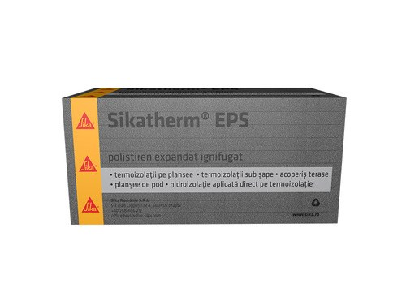
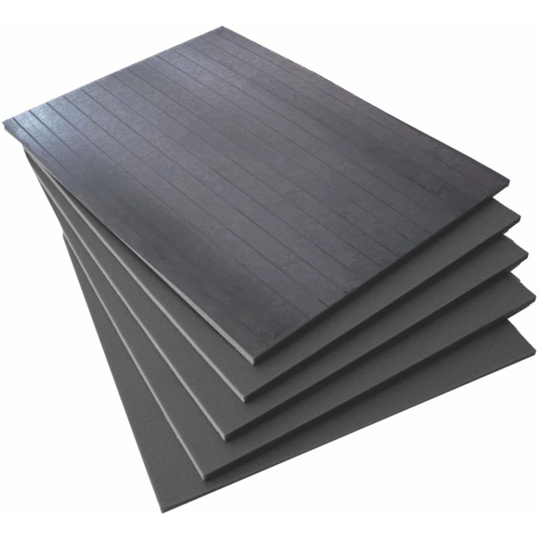
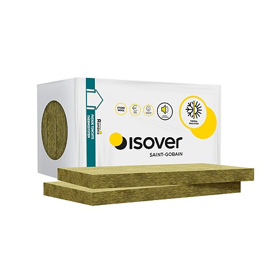
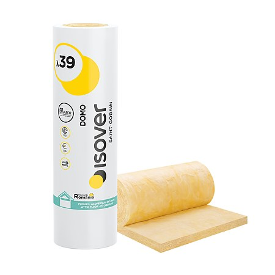
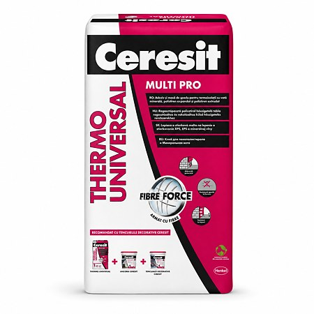
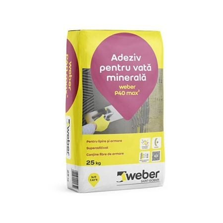
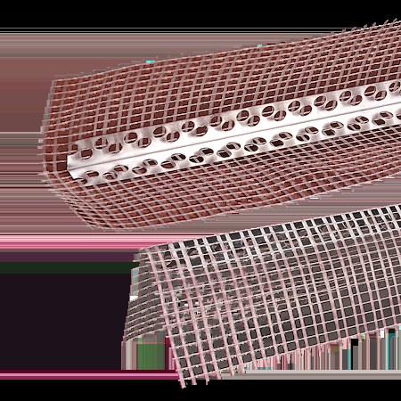
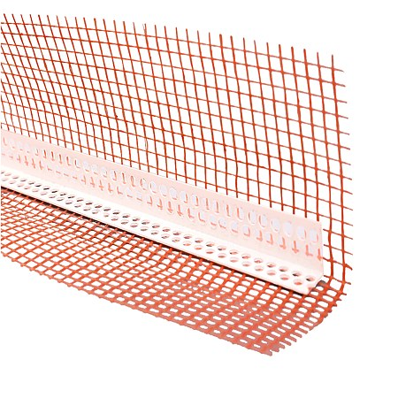
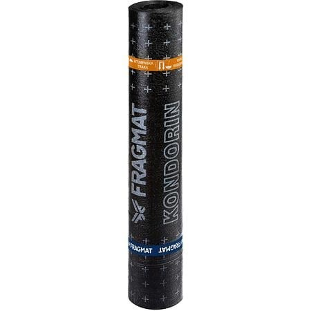
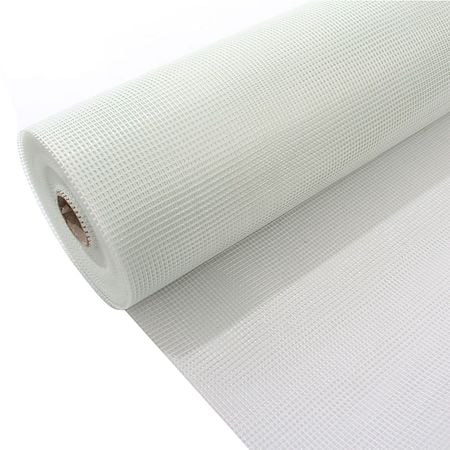

De ce conteaza izolatia termica?
O casa neizolataa pierde pana la 40% din caldura prin pereti si inca 25% prin pod. Izolatia termica corecta inseamna facturi mai mici cu 30–60%, confort termic vara si iarna, si o casa mai sanatoasa fara umezeala si mucegai pe pereti.
Alegerea materialului potrivit depinde de zona de aplicare (fatada, pod, pardoseala, soclu), de buget si de performanta termica dorita. Scrie-ne pe WhatsApp si iti recomandam solutia optima pentru casa ta.
Placi Termoizolante
Cele mai utilizate materiale pentru izolarea fatadelor, pardoselilor, teraselor si soclurilor.

Polistiren EPS Grafitat
- Cel mai bun raport pret/performanta termica
- Grafitul reduce conductivitatea termica cu 20% fata de EPS alb (λ=0.031 W/mK)
- Rezistenta buna la compresiune — potrivit si pentru pardoseala
- Aplicatii: fatada exterioara, pod, pardoseala, perete interior
- Durata de viata: 50+ ani

Polistiren XPS Extrudat
- Absorbtie de apa practic zero — perfect pentru zone umede
- Rezistenta la compresiune ridicata (150–300 kPa)
- Ideal pentru soclu, fundatie, terasa circulabila, pardoseala
- Nu se degradeaza in contact cu solul sau apa
- λ = 0.033–0.036 W/mK, grosimi 3–20cm
Vata Minerala
Solutia ideala pentru izolarea acustica si termica a podurilor, peretilor si fatadelor ventilate. Clasa de reactie la foc A1.

Vata Minerala Bazaltica (din piatra)
- Incombustibila — clasa A1, rezista pana la 1000°C
- Excelenta fonoizolanta (reduce zgomotul cu 40–50 dB)
- Nu absoarbe apa daca are tratament hidrofob
- Nu se deformeaza in timp, stabilitate dimensionala perfecta
- λ = 0.035–0.040 W/mK; durata de viata 50+ ani

Vata din Fibra de Sticla
- Cel mai usor material termoizolant — montaj rapid
- Pret mai mic decat vata bazaltica
- λ = 0.032–0.044 W/mK in functie de densitate
- Excelent pentru pod neterminat (rulou intre grinzi)
- Fonoizolant bun pentru pereti despartitori
Sistem Fatada ETICS — Adezivi, Plase, Profile, Dibluri
Tot ce ai nevoie pentru un sistem ETICS complet si corect executat — de la lipire pana la finisaj.
Adezivi pentru termoizolatie
Adeziv Polistiren EPS/XPS
Mortar adeziv pe baza de ciment pentru lipirea placilor de polistiren pe fatada. Aplicare cu driscuit cu dinti. Sac 25 kg — acopera ~5–6 m².
Afla disponibilitateAdeziv Vata Minerala Bazaltica
Mortar special cu adezivitate ridicata pentru vata minerala bazaltica (mai grea decat polistirenul). Reteta adaptata pentru placi rigide si semidure.
Afla disponibilitateAdeziv + Masa de Spaclu (2-in-1)
Mortar universal folosit atat la lipire cat si la stratul de baza (armatura). Economiseste un produs, ideal pentru santiere mici. Sac 25 kg.
Afla disponibilitateMasa de Spaclu / Grund Armare
Mortar pentru stratul de baza in care se inglobeaza plasa de fibra sticla. Aplicare 3–5 mm grosime pe toata suprafata izolatiei.
Afla disponibilitatePlase fibra de sticla
Plasa Fibra Sticla 145 g/m²
Plasa standard pentru armare strat de baza ETICS. Rezistenta la alcali, ochi 4×4 mm. Rola 50 m² (1m latime × 50m). Cea mai utilizata.
Afla disponibilitatePlasa Fibra Sticla 165–180 g/m² (ranforsata)
Plasa mai deasa si mai rezistenta, recomandata la zone cu trafic (soclu, colt intrare), cladiri cu risc de impact sau la sisteme premium.
Afla disponibilitatePlasa Fibra Sticla pentru Pardoseala
Plasa mai rigida, folosita pentru armarea sapelor si a stratului de tencuiala pe pardoseala. Rezistenta la compresiune si intindere.
Afla disponibilitatePlasa Coltar Pre-taiat (fasii diagonale)
Fasii pre-taiate la 45° pentru armare suplimentara a colturilor ferestrelor si usilor — zona critica pentru fisuri. Latime 20–25 cm.
Afla disponibilitateProfile si coltare termoizolatie
Profil Colt PVC cu Plasa
Protejeaza muchiile verticale ale cladirii. Corp PVC rigid cu plasa de fibra sticla pe ambele laturi. Lungime 2.5m, variante 6 mm si 9 mm.
Afla disponibilitateProfil Colt Aluminiu cu Plasa
Versiunea mai rezistenta din aluminiu, recomandata la colturile expuse traficului pietonal (intrari, soclu). Lungime 2.5m sau 3m.
Afla disponibilitateProfil Soclu / Startprofil
Profil orizontal din aluminiu sau PVC montat la baza sistemului ETICS. Sustine primul rand de placi si realizeaza separarea fata de soclu.
Afla disponibilitateProfil Terminatie / Finisaj Lateral
Profil pentru finisarea marginilor sistemului ETICS la ferestre, usi sau la limita cu alt finisaj. Previne infiltratii si ofera un aspect ingrijit.
Afla disponibilitateProfil Lateral Fereastra (cu compribanda)
Profil de etansare cu banda compresibila pre-montata, pentru rostul dintre tocul ferestrei si sistemul ETICS. Etansare perfecta, fara infiltratii.
Afla disponibilitateProfil Dilatatie Fatada
Profil dublu pentru rosturi de dilatatie intre panouri. Necesar pe fatadele lungi (peste 6m) pentru a prelua miscarile termice ale structurii.
Afla disponibilitateDibluri pentru termoizolatie
Diblu Termic 10×120mm (cap plastic)
Diblu cu cap din plastic termoizolat — elimina puntile termice la punctul de fixare. Pentru zidarie BCA, caramida sau beton. Min. 6 buc/m².
Afla disponibilitateDiblu Termic 10×160mm si 10×200mm
Variante de lungime mai mare pentru grosimi de izolatie de 14–18 cm. Acelasi cap termoizolat, cuiu metalic sau plastic.
Afla disponibilitateDiblu cu Cuiu Metalic (beton dur)
Pentru fixare in beton armat, piatra sau suporturi foarte dure unde cuiul plastic nu are forta suficienta. Cap termoizolat, cuiu otel zincat.
Afla disponibilitateDiblu cu Surub Rotativ (BCA / materiale moi)
Diblu cu surub din plastic special pentru BCA si zidarie usoara — surubul se roteste la batere si ancoreaza mecanic in materialul poros.
Afla disponibilitateHidroizolatie
Protejarea structurii impotriva apei — la fel de importanta ca termoizolatia.
Membrana Bituminoasa Autoadeziva
Folie hidroizolatoare autoadeziva pentru fundatii, subsoluri si terase. Nu necesita flacara, se aplica la rece. Grosime 1.5–4mm.
Afla disponibilitateFolie Bariera Vapori
Folie PE pentru protejarea izolatiei de umezeala din interior. Se monteaza pe partea calda a termoizolatiei, in special la poduri si mansarde.
Afla disponibilitateSpuma Poliuretanica 750ml
Spuma expandabila monocomponent pentru etansarea rosturilor, a spatiilor dintre tocuri si pereti, si a strapungerilor prin izolatie. Izoleaza si lipeste.
Afla disponibilitateMembrana Difuzie Vapori (Anticondens)
Membrana permeabila la vapori, impermeabila la apa lichida. Se monteaza sub invelitoare, deasupra izolatiei, pentru a permite evacuarea umiditatii din structura.
Afla disponibilitateBenzi Adezive, Distantiere & Alte Accesorii
Detaliile care fac diferenta intr-un sistem termoizolant executat corect.
Benzi adezive termoizolatie
Banda Adeziva Etansare Folii PE/PP
Banda dublu-adeziva pentru suprapunerea si etansarea rosturilor foliei bariera de vapori sau a membranei anticondens. Latime 60–100mm.
Afla disponibilitateBanda Compribanda Expandabila
Banda preimpregnata cu spuma poliuretanica care se extinde dupa montaj si etanseaza rostul dintre tocul ferestrei/usii si zidarie sau placa de izolatie.
Afla disponibilitateBanda Bituminoasa Autoadeziva
Banda din bitum modificat pentru etansarea rosturilor membranelor hidroizolatoare si a strapungerilor prin terasa sau fundatie. Rezistenta la apa.
Afla disponibilitateBanda Aluminiu Autoadeziva
Banda din folie de aluminiu pentru etansarea si armarea rosturilor pe izolatie (conducte, tevi, suprafete metalice). Rezistenta la temperaturi inalte.
Afla disponibilitateDistantiere armatura beton
Distantiere Plastic Rotunde (capac)
Distantiere tip „capac" pentru mentinerea acoperirii cu beton a armaturilor in placi, grinzi si fundatii. Grosimi standard: 20, 25, 30, 40, 50 mm.
Afla disponibilitateDistantiere Plastic Tip Scaun (pentru bare)
Distantiere „scaun" sau „cavalet" care sustin barele de armatura la inaltime, asigurand stratul de acoperire in placi si dale de beton.
Afla disponibilitateDistantiere Plastic pentru Pereti / Cofraje
Distantiere tip „stea" sau „cruce" pentru mentinerea spatiului dintre armatura si cofrajul peretilor. Grosimi 15–50 mm.
Afla disponibilitateDistantiere Beton (cuburi/prisme ciment)
Distantiere turnate din mortar de ciment — varianta clasica si ieftina. Se leaga direct de armatura cu sarma. Nu se deplaseaza la turnarea betonului.
Afla disponibilitateFinisaj fatada & scule
Tencuiala Decorativa Siliconica
Stratul final al sistemului ETICS. Rezistenta la ploaie, mucegai si UV. Granulatii 1.5mm si 2mm, diverse culori RAL.
Afla disponibilitateTencuiala Decorativa Acrilica
Varianta mai economica, usor de colorat. Buna rezistenta la ploaie si UV, gama larga de texturi (scoarta de copac, mozaic).
Afla disponibilitateGrund de Amorsare Fatada
Grund cu cuart aplicat inainte de tencuiala decorativa. Imbunatateste aderenta si uniformizeaza absorbtia. Se alege in culoarea tencuielii.
Afla disponibilitateDriscuit cu Dinti 10mm
Unealta pentru aplicarea adezivului in strat uniform cu dinti. Dimensiune dinte 10×10mm. Din inox sau aluminiu.
Afla disponibilitateGlet Inox / Driscuit Plastic
Glet din inox pentru aplicare masa de spaclu si strat de finisaj. Driscuit plastic pentru texturarea tencuielii decorative.
Afla disponibilitateAccesorii Izolatie
Adezivi, membrane, plase si coltare pentru sisteme de izolatie termica la exterior.

Adeziv pentru polistiren
Adeziv-grund bicomponent pentru lipirea placilor de polistiren EPS/XPS pe suport. Consum 4-6 kg/m², sac 25 kg, rezistenta la umiditate.
Afla disponibilitate
Adeziv pentru vata minerala
Mortar adeziv special pentru vata bazaltica si vata de sticla. Adezivitate superioara, sac 25 kg, se aplica pe toata suprafata placii.
Afla disponibilitate
Coltar aluminiu cu plasa
Coltar de armare din aluminiu cu plasa fibra de sticla pentru protectia muchiilor la fatade. Lungime 2.5m, latime 10×10 cm.
Afla disponibilitate
Coltar PVC cu plasa
Coltar flexibil din PVC cu plasa fibra de sticla pentru armare colturi fatade. Rezistent la alcali, bara 2.5m.
Afla disponibilitate
Membrana bituminoasa
Membrana hidroizolanta bituminoasa APP sau SBS pentru terase, fundatii si acoperisuri. Grosime 3-4 mm, latime 1m, rola 10m.
Afla disponibilitate
Plasa armare fibra de sticla
Plasa din fibra de sticla tratata anti-alcali pentru armarea stratului de baza la fatade. 145 g/m², rola 50m, latime 1m.
Afla disponibilitate